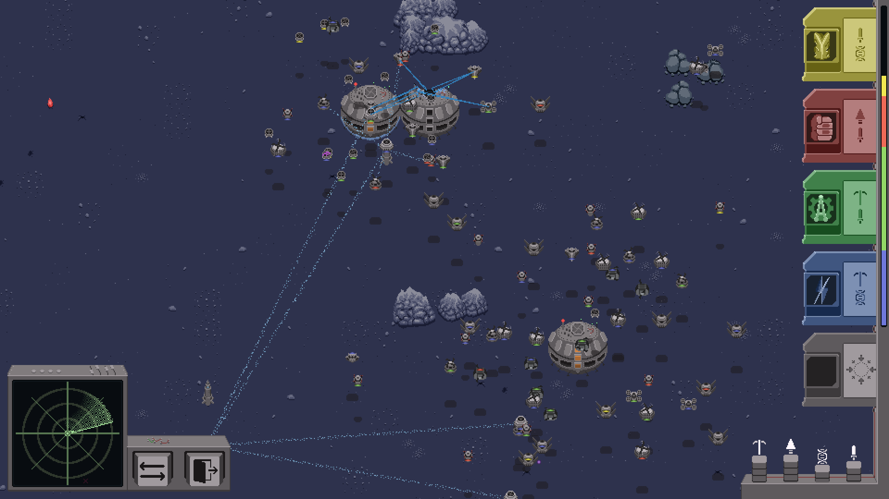
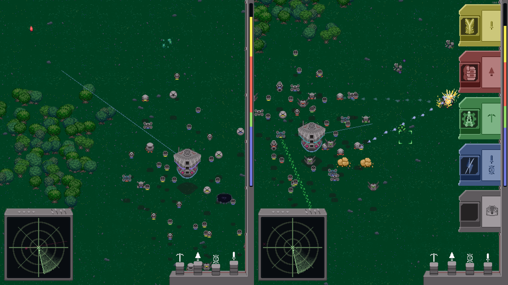
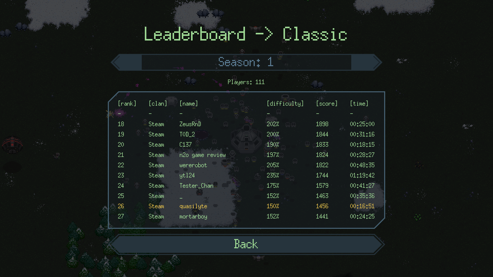
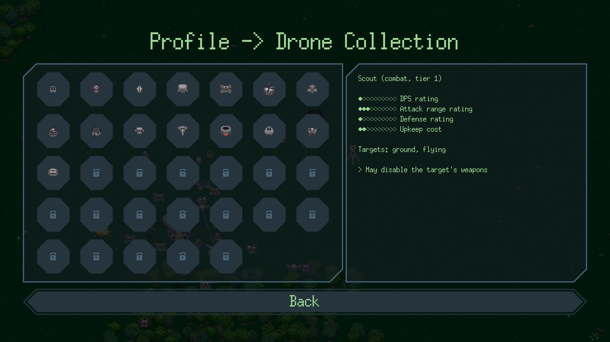

Roboden is an asymmetrical indirect control real-time strategy game about robot colonies. The player controls the colony priorities in this game while the automated drones execute that program. Collect resources, build and combine units, and play with friends in cooperative and competitive modes.
You can play it for free on Steam.
Roboden runs on many platforms!
- 32 & 64-bit Windows
- Mac OS
- Linux
- Steam Deck
- It can even run in your browser!
- Android (Google Play)
Roboden supports local Co-op and PvP modes. You can play it through the internet by using the Steam Remote Play feature.
This game is about honing your skills and builds. Climb up the ladder and share your results! There are 4 game modes and every last one of them has its own leaderboard.
More than 30 different drones divided into 3 tiers.
